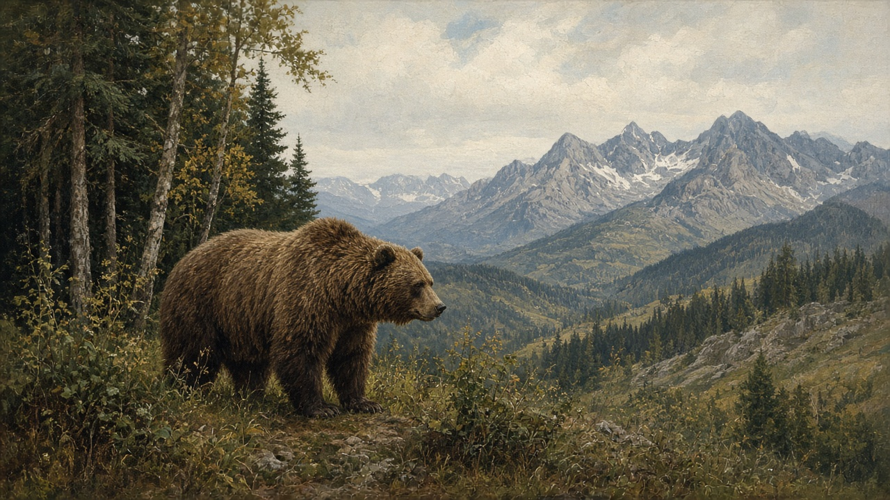
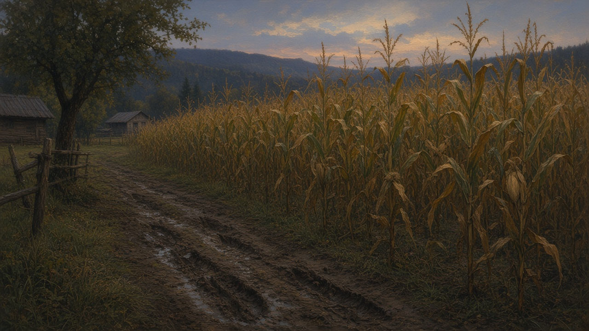

Wildlife
Sălbăticie. Not a species list. The animals people still meet at the orchard fence, in the maize after dark, and where the Danube opens into reeds.

The mountains still talk about them
In the Carpathians the brown bear, the urs, is not a legend. Villages in the mountain curve still lose a night of fruit or a beehive to one. People string electric wire around a stână, a sheepfold, and they keep dogs that mean it — that fold, the dogs, and the men who stay with the flock are on the shepherds page. They do not walk the forest edge at dusk with a bag of scraps. They also do not tell the thriller version. A bear that has learned the bins is a problem for the fence and the mayor, not a reason to empty the woods. The wolf, the lup, is the other name on the same slope. Shepherds still count the flock against it. The dogs work; the men stay with the sheep in the high grass until autumn brings them down — that turn is on the year. The lynx, the râs, is there too, and almost nobody sees it. People mention it the way they mention a ridge in fog: present, not a story you act out.
In the morning the slope has a sentence on it. A print in the mud by the path, wider than a dog, and the low apples gone. A hive box tipped, or only the grass flattened where something heavy sat. People say whether the night was quiet, and they look at the ground before they say it. The fence and the bins are a nearer argument. Up here the talk stays short: tracks, a dog that would not settle, and whether anyone walked the edge after dusk.
Forests, fields, and ordinary damage
Lower down the talk changes. The woods people walk for timber and mushrooms — pădurea past the last house — sit on the forest. Red deer, the cerb, and the smaller căprioară cross a road or stand in a clearing. Hunting is a licensed winter business in many communes, discussed like firewood, not like sport television. The wild boar, the mistreț, is the animal that actually argues with the harvest. Maize takes the worst of it, usually after dark. A sow with piglets is what you do not surprise. The fox, the vulpe, still finds the henhouse if the latch is lazy. This is the same yard mapped on villages and the same autumn hurry as harvest: crop loss, a dog that barked, a neighbor who saw tracks in the mud after rain.
The damage has a clock. A row of maize bent in the night, cobs torn, tracks still wet at breakfast. A căprioară in the headlights is a pause on the lane, not a hunt. The fox is smaller and closer: a latch that did not catch, feathers by the coop, a hen that is simply not there. People talk about it the way they talk about a broken hinge. After rain the mud keeps the story until the sun hardens it. You do not need the Latin name. You need the habit of looking at the ground before you blame the weather.
Water, birds, and the Delta
Where the Danube slows and splits, the country keeps a different set of animals. The Delta is reeds, channels, and houses that sit with one foot in the water — that place is on the delta page. What people go there to see, or cannot help seeing, are birds: pelicans, pelicani, heavy on the air; herons, stârci, still as stakes; egrets and cormorants that blacken a willow. The chimney nest in a plains village is a different bird — the white stork people mean in the yard — and that story is on storks. Fishermen still work the quieter arms for carp, pike, and the catch that goes to a pot the same day. The coast beyond the mouth is another water — salt, the open mare, the page on the sea — and the birds thin out once the reeds give way.
The birds have a place in the day. At first light the pelicani lift off a channel in a line that is heavier than it looks. A stârc holds still until the boat is almost on it, then it is a stake that moved. Cormorants dry on a willow with their wings held open, black against the reed. Fishermen know which arm still holds a carp and which one only looks busy. You do not need a list. You need the habit of noticing which bird sat and which one only passed.
Night at the fence
The orchard is the first argument. Fallen apples, a bin the house meant to empty, a crate left by the shed because the day ran out. A bear that has learned this is not the ridge. It is the same urs, only closer, and it comes when the windows are already dark. People hear the bin go over. They do not open the door to look. In the morning the metal is on its side, the apples are gone, and the fence has a new sag. The talk is practical: move the bin inside, pick up what fell, do not leave scraps by the gate. A village that has had a week of this says so at the shop. The yard calls it a latch and a light left on.

The maize after dark
The mistreț does not argue in daylight. It comes when the field is only a darker block past the last beans. Maize takes it: stalks pushed aside, cobs torn, a path through the crop that was not there at supper. A sow with piglets is the one you do not walk up on. People know the sound — a grunt, then the dry leaves — and they wait until morning. What the household meant to keep is on harvest. This is the part that left in the night. Tracks at the edge are two deep slots, not the light print of a deer, and the mud holds them through breakfast. You do not need a count of the herd. You need the habit of walking the row at first light before you say the field is fine.
Dogs and wire at the stână
Higher up the night has a different fence. The stână is a sheepfold, not an orchard. What comes to the wire is the urs, the lup, sometimes only a rumor that moved the dogs. The dogs are not pets that sleep by a stove. They work, and the men stay with them. The wire is a tool, checked the way you check a latch, and a fold that lost it for a night has a story that is short and sour. The grass, the autumn walk down, and the dogs that mean it are on shepherds. This page only keeps the animals the dogs are there for. You do not need a thriller. You need the habit of asking whether the wire was live, and whether the dogs were out.
Morning tracks
Most mornings there is no animal. There are marks. A fox, the vulpe, left a narrow line along the henhouse and did not get in. The dog made its own circle and then sat. A boar crossed the lane and kept going; the maize will say whether it stopped. Deer prints at the tree line are light and already half gone. Children learn them the way they learn weather: this one is the dog, this one is not. After rain the mud is a page. By noon the lane has been walked over and the page is closed. You do not need a plaster cast. You need the habit of looking before the day erases it.
What you leave, what you watch
Most of this life you leave alone. The lynx, the deer at the tree line, the pelican on a sandbar. What people watch for is closer to the house: a bear that has learned the road to the bins, a boar in the maize, a fox at the coop, a dog that will not settle after dark. In town the same animals become a news item or a zoo trip. In a mountain sat they are a fence, a flashlight, and a sentence over the gate. You do not need a complete list of species. You need the habit of asking which animal the story is standing next to — and whether it was on the ridge, in the field, or in the reeds.
This page is only those meetings: the night at the fence and the bin on its side, the mistreț in the maize after dark, the dogs and the wire at the stână, the ordinary tracks in the morning mud, and the birds that sat in the reeds or only passed.